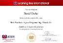
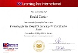
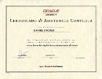
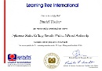
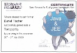
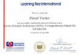
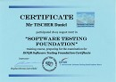
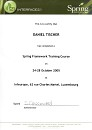
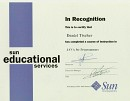

Trainings
Here the list of professional trainings I attended:
Date |
Duration |
Description |
View |
|
|---|---|---|---|---|
| 2017 FCT Solutions Lyon |
3 days |
ITIL Intermediate Module - Service Operation
The course covers management and control of activities and techniques that are documented in the ITIL Service Operation publication. |
||
| 2016 FCT Solutions Lyon |
3 days |
ITIL Foundation v3
Candidates gain knowledge and understanding in the following: Service management as a practice, The ITIL service lifecycle, Generic concepts and definitions, Key principles and models, Selected processes, functions and roles, Technology and architecture. |
Internal Training | |
| 2016 Xerox Seclin |
3 days |
Shell Scripting - Advanced
Variables, expressions, tests, loops, multiple choice, functions, debugging, job scheduling, event-driven programming, alerts, command history, init scripts, ksh specifics, data processing: awk, sed, grep. |
Internal Training | |
| 2016 Pythagore FD Seclin |
5 days |
Linux Administration - Advanced
RPM, RAID, LVM, Performance analysis, Journaling file systems, ACL, Quotas, PAM, LDAP. |
Internal Training | |
| 2015+ Atos Training Tours |
3 days |
Yearly mandatory PCI-DSS training and certification
Maintaining payment security is required for all entities that store, process or transmit cardholder data. Guidance for maintaining payment security is provided in Payment Card Industry (PCI) Data Security Standards (DSS). These set the technical and operational requirements for organizations accepting or processing payment transactions, and for software developers and manufacturers of applications and devices used in those transactions. Atos Data protection, PCI-DSS, Secure Coding, Security and Safety awareness, Security rules for mobile workers, Electronic payment means (monétique), Customer experience. |
Internal Training | |
| 2012 Learning Tree London |
4 days |
516 - Best Practices in Java Programming: Hands-On
In this course, you learn how to solve real-world software development problems and deliver fast, reliable applications. You learn how to take advantage of advanced language features and APIs, perform concurrent programming with threads, produce high quality code using design patterns, write maintainable code using Test Driven Development, and secure and improve the performance of your applications. |
 | |
| 2012 Learning Tree London |
5 days |
446 - Preparing for the CompTIA Security+ Exam
This comprehensive course prepares individuals to take and pass the CompTIA Security+ Certification Exam. Interactive demonstrations and numerous practice quizzes reinforce the concepts and provide the framework for a personalized study plan for exam success. |
 | |
| 2012 Cruz Roja Alicante |
5 days |
First Aid Advanced
Advanced training given to OHIM personel responsible for evacuation in case of emergency. |
||
| 2010 Oracle University Alicante |
5 days |
Oracle Service Bus 10g R3: Administration and Development
This training provides an in-depth analysis of Oracle Service Bus and how it can be used to create a message infrastructure for services throughout the enterprise. Students will learn how Oracle Service Bus fits into an SOA Architecture. They will also learn how to use OSB as an integration point for services within the enterprise. Students will learn how to connect, mediate, and manage interactions between heterogeneous services and legacy applications across an enterprise-wide service network. |
 | |
| 2010 Learning Tree London |
4 days |
294 - Influence Skills: Getting Results Without Direct Authority
In this course, you learn how to apply influence strategies to gain commitment from others and foster collaboration. You also learn how to dynamically adjust your approach to others to gain buy-in, achieve goals by enhancing trust and cooperation, and deal effectively with challenging behaviors to overcome resistance and inertia in others. |
 | |
| 2009 Skillsmatter London |
2 days |
Terracotta’s JVM-level clustering technology
This course highlights real-world use cases where Terracotta is employed to provide better scaling and HA with semantic correctness, whilst providing low time-to-market and in-depth visibility into the Java Cluster (http-sessions, distributed caches, clustering POJOs, Spring singleton-beans/context). |
 | |
| 2008 Learning Tree London |
3 days |
424 - Service Oriented Architecture (SOA)
This course defines "service" and "architecture" and establishes a strong understanding of the concepts needed to have an effective working knowledge of SOA methodologies, modeling, design, SOA technologies, orchestration and architectural frameworks. |
 | |
| 2008 Cruz Roja Alicante |
3 days |
First Aid Training
This training was given at OHIM to personel responsible for evacuation in case of emergency (I took on this responsibility in 2007). |
||
| 2007 Bogdan Bereza-Jarociński Alicante |
2 days |
ISTQB® Certified Tester - Foundation
The ISTQB was founded as an
International Software Testing Qualifications Board in Edinburgh in November 2002. The
qualifications are based on a syllabus
|
 | |
| 2007 OHIM (QRP) Alicante |
5 days |
PRINCE2 Foundation & Practitioner
PRINCE®, which stands for Projects in Controlled Environments, is a project management method covering the organisation, management and control of projects. PRINCE® was first developed by the Central Computer and Telecommunications Agency (CCTA), now part of the Office of Government Commerce (OGC), in 1989 as a UK Government standard for IT project management. |
Internal Training | |
| 2006 OHIM (EPO-team) Alicante |
2 days |
Business Process Modelling (BPMN)
A standard Business Process Modeling Notation (BPMN) will provide businesses with the capability of understanding their internal business procedures in a graphical notation and will give organizations the ability to communicate these procedures in a standard manner. |
Internal Training | |
| 2006 OHIM (Exagon) Alicante |
2 days |
ITIL Foundation
The Information Technology Infrastructure Library (ITIL) is an integrated set of best-practice recommendations. This framework essentially defines how to organize the system and network management departments within individual organizations. |
||
| 2006 Adecco Alicante |
2 days |
Health And Safety Training
Through effective occupational health and safety (OHS) management, a business can safeguard and enhance its greatest assets, its people. This training meets legislative, regulatory and other workplace health and safety requirements (in Spain). |
||
| 2005 infeurope S.A. (Jürgen Höller) Luxembourg |
1 week |
Spring & Hibernate
As the leading full-stack Java/J2EE application framework, the Spring Framework delivers significant benefits for many projects, reducing development effort and costs while improving test coverage and quality. Hibernate is a powerful, ultra-high performance object/relational persistence and query service for Java. Hibernate lets you develop persistent classes following common Java idiom including association, inheritance, polymorphism, composition, and the Java collections framework. Contents: J2EE Review, Spring Framework, Hibernate, EJB3, Servlet/JSP Review, Struts, Spring WebMVC |
 | |
| 2005 OHIM (IIL Training) Alicante |
1+ weeks |
PMI Project Management
PMI’s Project Management Professional (PMP)® credential is the most important industry-recognized certification for project managers. Globally recognized and demanded, the PMP® demonstrates that you have the experience, education and competency to lead and direct projects. The course covers the Project Management Body of Knowledge, Third Edition. |

|
|
| 2003 infeurope S.A. (BEA Training) Luxembourg |
3 weeks |
BEA Weblogic 7 and 8.1
Customized training session: WLS-D11-70 Fundamentals of J2EE Web Application Dev. WLS-D21-70 Dev. Business Logic Components with EJBs WLS-D29-70 Developing Enterprise Web Services PLAT-01-81 Introduction to the BEA WebLogic Platform 8.1 |

|
|
| 2002 Infopark Academy Luxembourg |
3 days |
NPS Training
Infopark NPS combines targeted information editing with the perfect integration of portal- and CMS functions. Editor's Training - Insert and maintain contents in Infopark NPS. Accomplish an editor's daily tasks. Administrator's Training Advanced Infopark NPS usage to provide the knowledge required for handling NPS administrative issues. Webmaster training - Individual design and unification of design elements with templates. Usage of Infopark NPS tools for automation. |
||
| 2000 Sun Microsystems Luxembourg |
1 week |
Oracle 8 - Database Administration
This course provides the necessary knowledge and skills to become a successful Oracle Database Administrator. Participants learn the basic administrative tasks and tools needed to set up, maintain, and troubleshoot an Oracle database. Topics include installation and configuration, creation and management of a database, importing and exporting data, and security. |
||
| 1998 Sun Belgium Brussels |
1 week |
Sun Java-Programming (SL-275)
The JavaTM Programming Language course provides students with information about the syntax of the Java programming language, object-oriented programming with the Java programming language, creating graphical user interfaces (GUIs), exceptions, file input/output (I/O), and threads and networking. Programmers familiar with object-oriented concepts can learn how to develop Java technology applications. The course uses the Java 2 Software Development Kit. |
 | |
| 1995 Navision Software Vedbaek |
1 week |
Navision Financials 1.0
Technical training about Navision Financial's internals, the proprietary 4GL development tools and best practices to use them efficiently. |
Internal Training | |

{kind=link}
{kind=link}
{kind=link}
{kind=link}
{kind=link}
{kind=link}
{kind=link}
{kind=link}
{kind=link}
{kind=link}
{kind=link}
{kind=link}
{kind=link}
{kind=link}
{kind=link}
{kind=link}